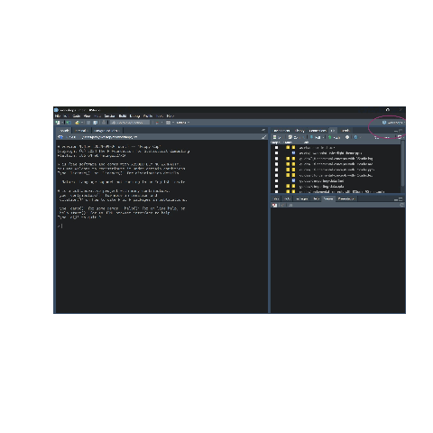
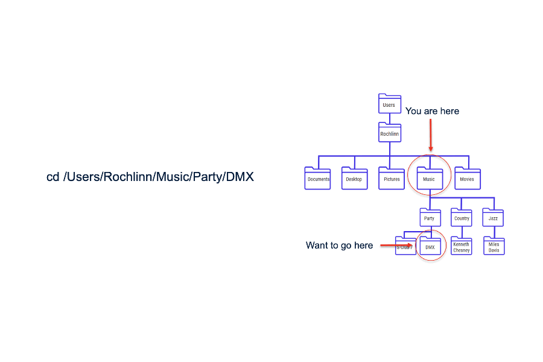

R: Importing Data
2026-11-11 02:58:20
Where do your data live before R
MS Excel, Google Sheets, CSV, Databases, Websites/APIs
We usually visualize our data as existing in distinct files that we
can interact with. Google sheets, CSV, Excel files &c. These consist
of rows, columns, and cells. Well what happens when we import these
files into R? What do we have to think about once we get there?
Importing versus opening data
When you work with data in R you have move from opening
data files to importing data into data structures.
When you import data into R you aren’t clicking on rows, columns
and cells in excel or google sheets anymore you are manipulating
objects .
One of the most confusing aspects of learning your first programming
langauge is that data are no longer CSVs, or Excel files. True, that’s
where the data are still stored in your desktop, but once you
import data they become objects (stored in data
structures) that you can manipulate.
Think-pair-share
Lets say you have opened a file in R (health_data.csv). You edit a
cell in the data structure in R. What happens to the original
health_data.csv file?
The answer is nothing. Once you begin manipulating data in R, you
would need to first save that those edits to the file using a call like
write.csv to the original file (not recommended). Otherwise
all you are doing is editing the object in R. This leads into
how R knows where the file lives. How does R know where the csv tha tyou
want ot manipulate lives?
File structures
File structures often referred to as trees
Folders are often referred to as directories
## C:/Users/alexj/Desktop/csc/workshops/./assets/demo-file-struct
## ├── mysubdir
## │ ├── mytext2.txt
## │ └── myword.docx
## └── mytext.txt
A common issue I ran into when I used to TA for statistics and
computer science classes was the notion of the file structure or
directory structure. People who work with computers will often use the
terms file and directory interchangeably. If
you understand file structure and directory structure than many common
problems that people who are new to coding fall away.
The Working Directory
The working directory is a term of art for
the directory where your project lives
## [1] "C:/Users/alexj/Desktop/csc/workshops/docs/r-fundamentals"
The current working directory can be seen using the
getwd() command. Similarly we can manually set the working
directory by using the setwd() command. However this is not
recommended as it requires us to set relative versus absolute paths.
# This is not recommended # setwd()
R Projects
The best way to keep track of files is with R
Projects
Warning you will want to turn off saving objects
and memory to .Rdata (a special folder that holds session
data)
can be turned off by going to
tools > global options > general then under
workspace toggle off
Restor .Rdata into workspace at startup

So I have included a GIF on how to create a new RStudio Project. When
you open the .Rproj file, RStudio automatically sets the working
directory to that project folder. No more setwd() headaches or “file not
found” errors. All your scripts, datasets, and figures live inside one
consistent structure. Makes sharing and collaboration much easier
because it works seamlessly with major version control softwares. Don’t
worry if you don’t know what that is yet, I will be running a whole
series on Git and GitHub later on in the semester. Projects also
remember your R environment, active tabs, and even console history when
you reopen them. You can easily link a project to Git for version
control — every project is its own repository. For teaching or research,
it ensures every student or collaborator starts from the same
structure.
Relative versus absolute filepaths

Working with absolute and relative filepaths
# This is not recommended # file.path("C:/Users/jackx/Desktop/csc/Workshops/docs/assets/") # This is recommmended and reproducible # file.path("../docs/assets/gifs/file-path-example.gif")
Note that the . operator in a filepath signifies the
current working directory .
This operator can be used any number of times to specify higher
levels of the file structure.
The reason why you do not want to work with absolute
filepaths is that this will absolutely break if you try to work on this
codebase on another computer. For example if another person wants to
download your code and use it (say you publish with some code) and the
whole project lives in a folder called Workshops then the
whole file structure before Workshops will in all
likelihood not exist. Instead we should work with relative
filepaths whenever possible (and it’s almost always possible in my
experience). To specify a relative filepath we can simply use
the . operator within our file path string. This operator
can be used any number of times to specify higher levels of the file
structure. For example, lets say we are working in the
workshops/guides then to specify the
assets/gifs directory we would need to say
../assets/gifs.
Base R
<- read.table ("../../data/health_data.csv" ) # this will be an ugly mess of strings--trust me 1 ,]## [1] "id,group,gender,age,smoker,weight_pre,weight_post,bmi_pre,bmi_post,vo2max_pre,vo2max_post,improved"<- read.table ("../../data/health_data.csv" , sep = "," , header= TRUE )|> head (1 )## id group gender age smoker weight_pre weight_post bmi_pre bmi_post vo2max_pre
## 1 1 Control Female 28 No 78.3 78.4 26.2 26.3 46.4
## vo2max_post improved
## 1 45.4 False
read.table() is R’s primary means of importing data,
allowing the user to specify a variety of options.
read.csv() and read.delim() are two wrappers
on read.table() to simplify the import of comma separated
and tab delimited files; the only difference between the two is the
delimiter that they expect.
Thankfully, you can fix this with a few extra parameters. However,
there are smarter, less clumsy options out there.
read.csv()# import from directory <- read.csv (file = "../../data/gapminder.csv" )# import from url <- 'https://raw.githubusercontent.com/jstaf/gapminder/master/gapminder/gapminder.csv' <- read.csv (url)
using read.csv() is as simple as specifying a directory
or url from which to import data…By default, it assumes your file has a
header and that any blank values contain the characters NA.
Depending on our data source, however, we may need to adjust these
parameters…This is also Base R.
Missing values and inconsistencies
# a set of possible NA values <- c ("NULL" , "NA" , "N/A" , "99" , "" , " " )<- read.csv (file = "../../data/gapminder.csv" , na.strings = na_values)# a file with no header <- read.csv (file = "../../data/gapminder.csv" , header = FALSE )<- read.csv (file = "../../data/gapminder.csv" , strip.white = TRUE )# additional options can be found (as always with ?) # ?read.csv()
It may also be a good idea to trim excess white space, which is not
done by default… TRUE and FALSE can be denoted with either
T and F or TRUE and
FALSE. However, T and F as
variable names can be overwritten to point to other objects, whereas
TRUE and FALSE cannot. It is advisable to
always use TRUE and FALSE.
When importing data, it’s common to encounter inconsistencies — blank
cells, placeholder codes like 99, or stray spaces in text columns.
The na.strings argument lets you tell R what should count as missing.
Similarly, strip.white = TRUE cleans up text columns automatically.
Also, some files (especially machine-generated or exported from older
systems) may lack a header row; header = FALSE helps handle those.
Additional options and their defaults can be found with
?read.table().
Tidyverse
library (readr)<- read_csv (file = "../../data/gapminder.csv" )## Rows: 1704 Columns: 6
## ── Column specification ──────────────────────────────────────────────────────────────
## Delimiter: ","
## chr (2): country, continent
## dbl (4): year, lifeExp, pop, gdpPercap
##
## ℹ Use `spec()` to retrieve the full column specification for this data.
## ℹ Specify the column types or set `show_col_types = FALSE` to quiet this message.
read.csv() and read_csv() are very similar.
read_csv() is ostensibly faster, it also loads data into a
tibble as opposed to a data frame, and has more user friendly defaults.
It does, however, require loading additional packages.
As with read.csv() and read.delim,
read_csv() and read_tsv() – for tab separated
values – are wrappers on read_delim() that is more
flexible.
read_csv() assumes the file has a header, it trims white
space by default, and that missing data are either blank cells or
contain the character NA. To adjust these, use the
arguments col_names = FALSE, na = na_values,
trim_ws = FALSE.
Excel
library (readxl)<- read_excel ("../../data/gapminder.xlsx" )<- as.data.frame (read_excel ("../../data/gapminder.xlsx" ))
Base R does not include a package for loading in Excel files. For
this we’ll use the tidyverse package readxl, which can read
both legacy xls as well as more recent xlsx
files. This is tidyverse, and so read_excel() loads a
tibble object. If you need or want a data frame, you’ll need to adjust
for that…
More In-Depth with Tidyverse read_excel
<- read_excel ("../../data/gapminder.xlsx" , sheet = '1952' , range = "A1:D5" )
You can specify specific sheets and ranges with the
sheet and range arguments…Additional options
and their defaults can be found with ?readxl or by visiting
https://readxl.tidyverse.org/ .
Advanced topic: importing multiple files with purr
# Importing Multiple Files with purrr suppressMessages (suppressWarnings (library (tidyverse)))# identify all CSV files in a folder <- list.files (path = "../../data" , pattern = " \\ .csv$" , full.names = TRUE )# use purrr::map_dfr() to read and combine them <- files %>% set_names (basename) %>% # keep file names map_dfr (~ suppressWarnings (suppressMessages (head (read_csv (.x), 1 ))), .id = "source" ) # combine into one tibble
purrr is the tidyverse’s toolkit for functional
programming. The key idea is that in R, functions are objects like any
other, so you can hand a function to another function. Here,
map_dfr() takes read_csv and applies it to every file in
the list, then stacks the results. Compare that to a for loop: no loop
counter, no empty object to grow, nothing left behind in your
environment. You say what to do to each file, and purrr handles the
repetition. Base R’s lapply() works the same way, if you’ve
seen it.
Glimpse and multiple files
%>% select (1 : 5 ) %>% # only the first 5 columns head (3 ) %>% # only the first 3 rows glimpse ()## Rows: 3
## Columns: 5
## $ source <chr> "gapminder.csv", "gapminder_nas.csv", "health_data.csv"
## $ country <chr> "Afghanistan", "Afghanistan", NA
## $ continent <chr> "Asia", "Asia", NA
## $ year <dbl> 1952, 1952, NA
## $ lifeExp <dbl> 28.801, NA, NA
Now what happens when we call the function glimpse()
(also from the tidyverse). This gives a nice, clean graphical
representation of what is in our object. Like
After importing
Now that we’ve imported data here are some common functions used to
get oriented with a new dataset.
<- read.csv ("../../data/health_data.csv" ) str (health_df)## 'data.frame': 40 obs. of 12 variables:
## $ id : int 1 2 3 4 5 6 7 8 9 10 ...
## $ group : chr "Control" "Control" "Control" "Control" ...
## $ gender : chr "Female" "Male" "Female" "Male" ...
## $ age : int 28 24 14 29 37 40 40 39 34 25 ...
## $ smoker : chr "No" "No" "No" "Yes" ...
## $ weight_pre : num 78.3 73.9 62.6 72.7 93.3 93 77.5 91.5 88 73.5 ...
## $ weight_post: num 78.4 72 62 71.7 92.6 93.2 75.4 90.1 88.1 71.4 ...
## $ bmi_pre : num 26.2 24.5 21.8 24.1 24.6 25.1 30.7 27.3 21.6 21.9 ...
## $ bmi_post : num 26.3 23.4 21.1 23.1 25.6 25 31.4 25.9 22 22.1 ...
## $ vo2max_pre : num 46.4 42.5 32.6 43.3 30 42.4 44 38.5 37.3 44.1 ...
## $ vo2max_post: num 45.4 42.4 37.3 43.3 31.2 44.1 44.9 39.5 36.4 43.4 ...
## $ improved : chr "False" "False" "True" "True" ...
str() is a handy function like glimpse()
from dplyr which can give you a quick overview of the object
that you’re working with. The main differences between the two are that
glimpse() requires the dplyr package and
str() is just base R. However, glimpse() is
noted for giving nicer readout for especially wide data.
What is in a name?
<- read.csv ("../../data/health_data.csv" )names (health_df)## [1] "id" "group" "gender" "age" "smoker"
## [6] "weight_pre" "weight_post" "bmi_pre" "bmi_post" "vo2max_pre"
## [11] "vo2max_post" "improved"
One of my favorite data manipulation functions in base R
is the names function. People who work with data a lot spend a lot of
time thinking about what their data should be named and so names are
often quite descriptive. So if the output of str or
glimpse is a bit scary (I often think it is) then names is
a good first step to understanding your data.
Big data big problems
# test file in a temp location set.seed (42 )<- 1e5 <- data.frame (id = seq_len (n),group = sample (letters, n, replace = TRUE ),value = rnorm (n),count = rpois (n, 10 ),flag = sample (c (TRUE , FALSE ), n, replace = TRUE )<- tempfile (fileext = ".csv" )fwrite (big, tmp)# time each reader 5 times <- bench:: mark (base_read.csv = read.csv (tmp),dt_fread = fread (tmp),iterations = 5 ,check = FALSE %>% mutate (expression = c ("Base R" , "data.table" ))c ("expression" , "median" , "mem_alloc" )]## # A tibble: 2 × 3
## expression median mem_alloc
## <chr> <bch:tm> <bch:byt>
## 1 Base R 611.4ms 18.25MB
## 2 data.table 29.1ms 3.38MB<- setNames (as.numeric (timings$ median) * 1000 , c ("base" , "dt" ))# double check that tmpfile is deleted unlink (tmp)
Over five runs, read.csv() took a median of 611 ms,
while fread() took 29 ms, about 21 times faster. While
milliseconds are tiny units of measurement (a thousandth of a second),
scaling this to much larger datasets can save you hours.
Takeaway
R imports data into memory, it doesn’t “open” files
Keep projects self-contained with R Projects
Always use relative paths
Use read_csv() / read_excel() for
tidyverse workflows
Explore your data with str(), glimpse(),
head() and names()
Know your data’s shape: long vs. wide